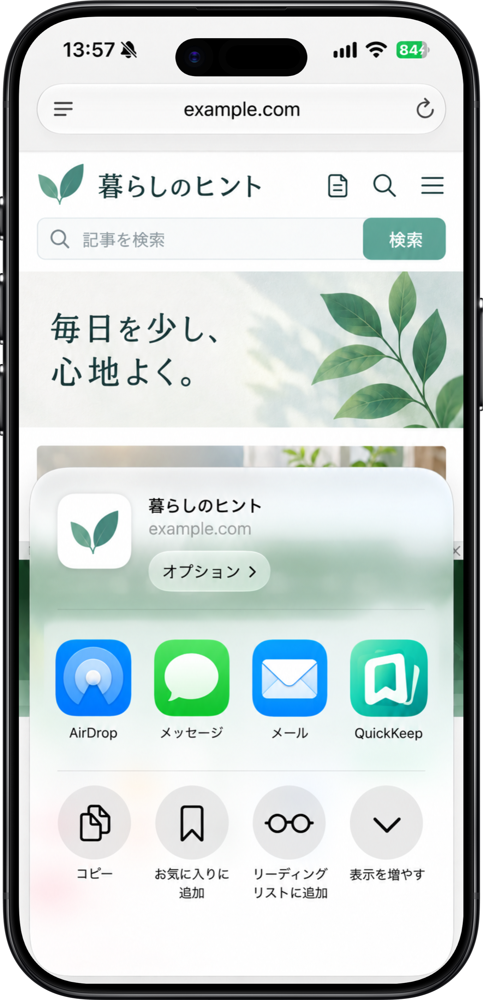
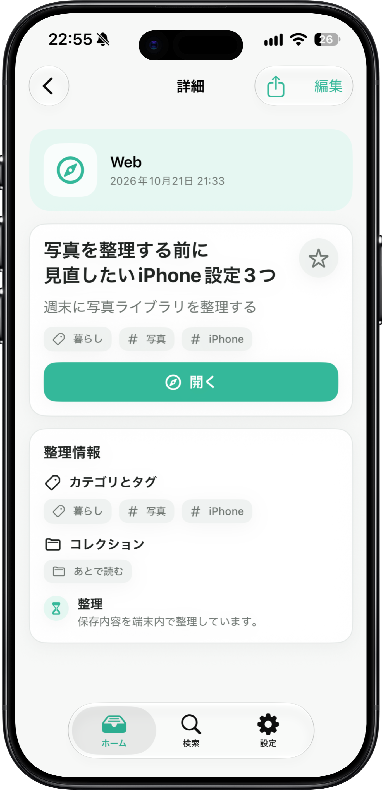
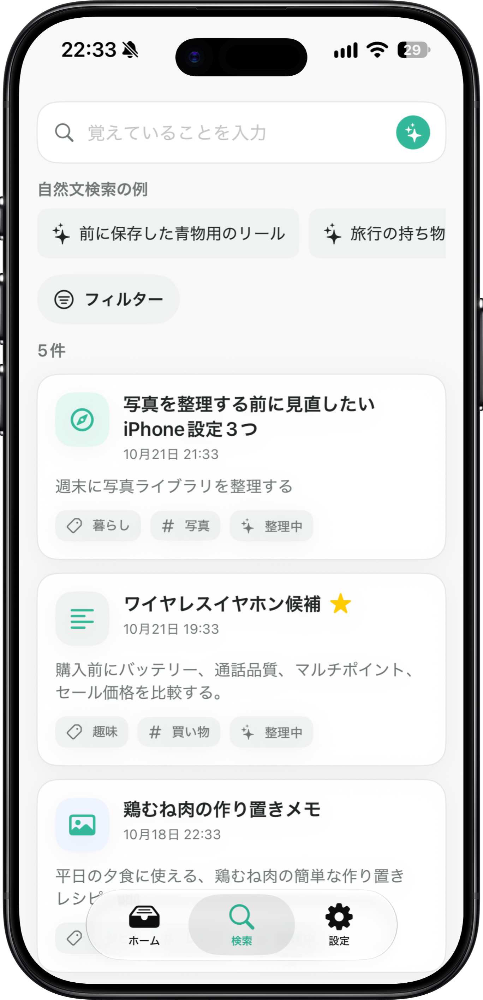
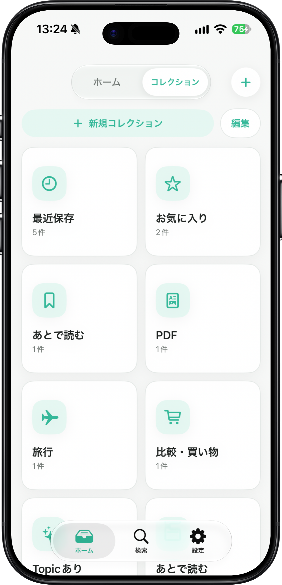

使い方
保存、整理、検索の基本操作を掲載します。
1. 共有から保存する
Safari、写真、ファイルなどで共有ボタンを開き、QuickKeepを選びます。共有メニューに見当たらない場合は「その他」→「編集」からQuickKeepをオンにし、よく使う項目へ追加してください。

2. まず保存し、整理はあとから
保存時にフォルダやタグを決める必要はありません。保存後はタイトル、メモ、お気に入り、カテゴリ、タグ、コレクションを編集できます。対応端末では端末内AIがカテゴリやタグの候補を作成することがあります。

3. 検索して見つける
検索では、保存したタイトル、メモ、カテゴリ、タグなどを手がかりに探せます。Freeではキーワード検索を利用でき、Proでは対応端末で自然な言葉によるAI検索も利用できます。検索履歴は設定の「ストレージとデータ」から確認・削除できます。

4. コレクションでまとめる
手動コレクションを作ると、関連する保存物を複数のまとまりで管理できます。Proでは、条件に合う保存物を自動で集めるスマートコレクションも利用できます。

5. 同期とデータ管理
iCloud同期は設定から任意でオン・オフを選べます。オフでも、このデバイスでの保存・検索・整理は利用できます。削除した保存物は「最近削除した項目」に30日間残り、復元または完全削除を選べます。